A console table is one of the easiest surfaces in a home to get wrong.
Too empty, and it looks unfinished. Too full, and it starts to look like a catch-all.
The twelve ideas below genuinely work, but only once a couple of simple rules get applied first.
Those rules matter more than any single object on the list that follows.

The One Rule Behind Every Good Console Table
Scale and restraint beat quantity, every single time.
A console table isn't a shelf for overflow. It's closer to a gallery pedestal than a junk drawer, a curated surface rather than a storage one.
Three to five objects, each with its own actual reason for being there, consistently outperforms a table covered edge to edge.
Everything placed on it should genuinely earn its spot.
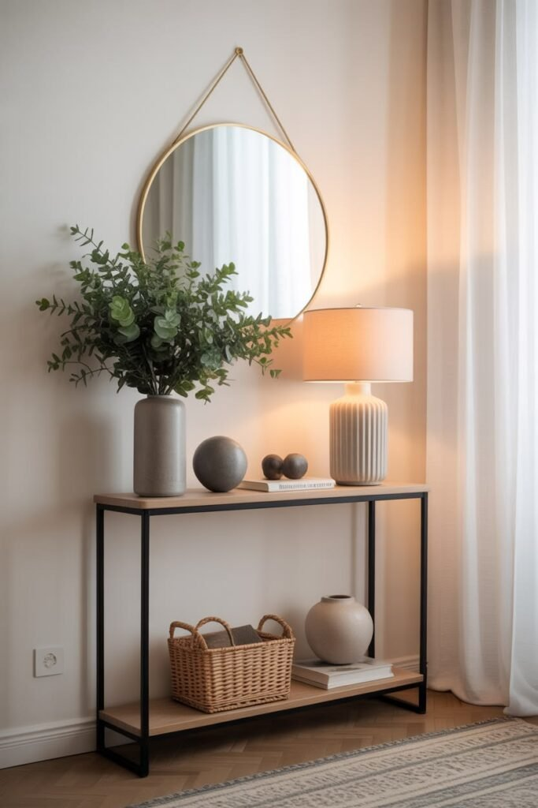
Avoiding the Clutter Trap
Clutter on a console table rarely happens all at once. It builds up one small addition at a time until nobody notices how much is actually sitting there.
A useful check: if an object doesn't add height, texture, or a focal point, it's probably just filler.
Grouping in odd numbers, threes work especially well, tends to look more natural than pairs or even rows.
Leaving visible empty space on the table is a deliberate choice, not a sign that something's missing.
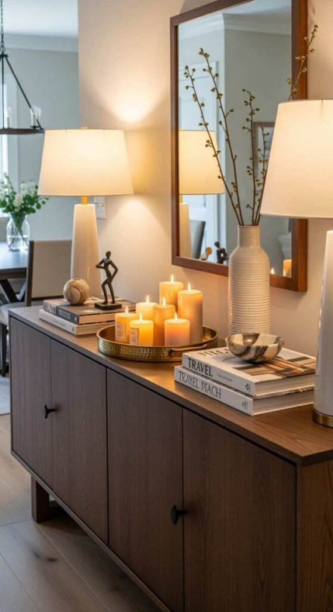
1. Refresh It Seasonally
A console table doesn't need to stay static year-round.
Swapping a few key pieces, a seasonal stem, a different-colored object, a holiday accent, keeps the space feeling current without a full restyle.
Keeping the base layer, the tray, the lamp, the mirror, constant, and rotating just the smaller accents, makes seasonal updates genuinely quick.
This is the easiest way to get more visual mileage out of a table that's already working well.
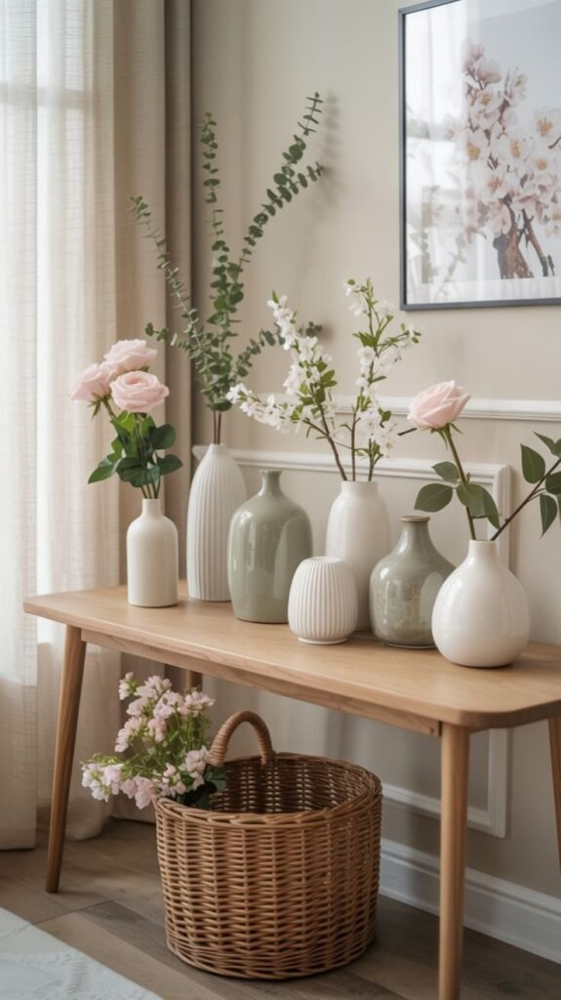

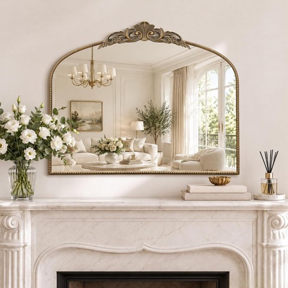
Micasso Vintage Gold Arched Mirror, 36 x 29, Baroque Antique Wall Mirror
Shop on Amazon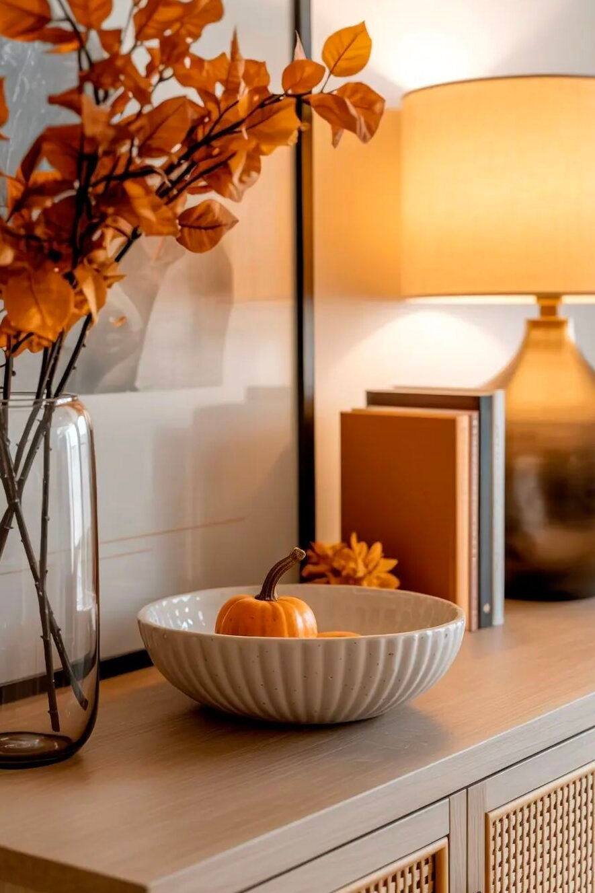
2. Layer Objects for Depth
Placing objects at different depths, not just different heights, adds dimension that a flat row simply can't achieve.
A taller piece in back, something mid-sized slightly forward, and a small accent in front of that builds real visual depth.
This technique works well combined with either a symmetrical or asymmetrical approach.
It's a small adjustment that makes an already-decent arrangement look noticeably more considered.
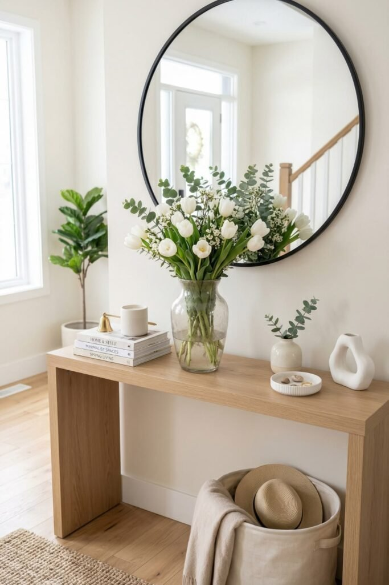
3. Try Asymmetry for a Relaxed Feel
An off-center arrangement feels more collected and less staged than a perfectly mirrored one.
This suits a more eclectic or lived-in home, where the goal isn't formal balance in the first place.
Asymmetry still needs visual weight distributed across the table. One side can't sit completely empty while the other carries everything.
It takes a bit more trial and error to get right than symmetry does, but it tends to feel more personal once it actually lands.
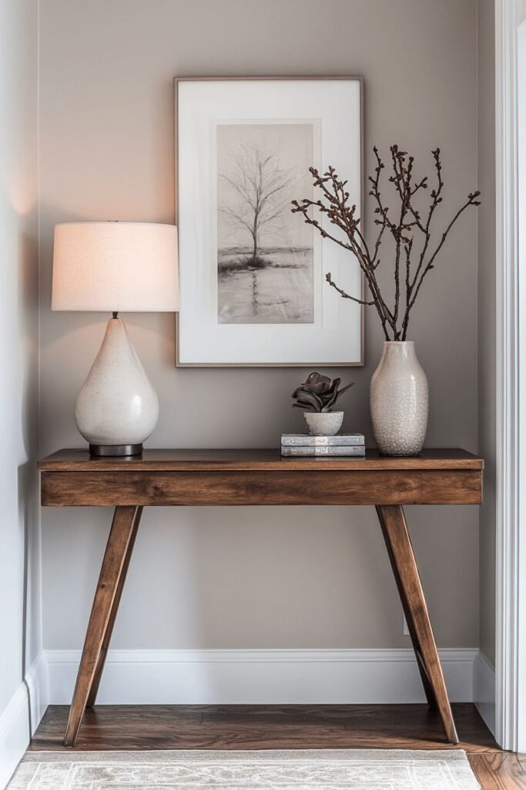
4. Lean on Symmetry for a Clean Look
Matching lamps, vases, or candlesticks placed in mirrored pairs reads as calm and genuinely formal.
This suits a more traditional or classic home, one where balance matters more than spontaneity.
Symmetry is also one of the easiest styling approaches to execute without much trial and error along the way.
It's a dependable default whenever nothing else on this list feels like the right fit.
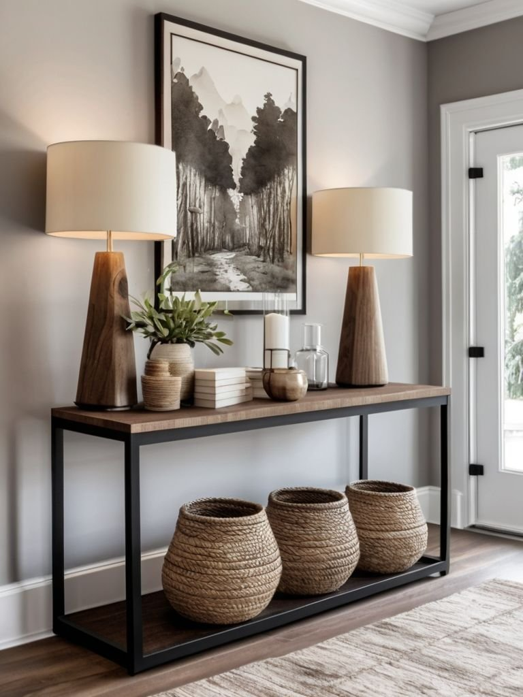
5. Vary the Height on Purpose
A row of same-height objects reads as flat, no matter how nice each individual piece happens to be.
One tall item, one medium, one low accent creates a visual rhythm that the eye naturally follows across the table.
This principle applies whether the table ends up styled with three objects or eight.
It's one of the fastest ways to make an existing arrangement look more intentional without buying a single new thing.
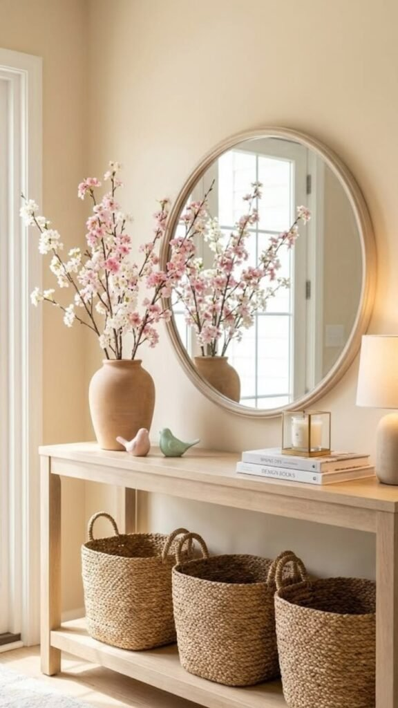
6. Add a Few Personal Pieces
A photo, a travel memento, or a meaningful small object keeps a console table from feeling like a showroom display.
The key word here is a few. One or two personal pieces add warmth, while five or six start to look cluttered fast.
Editing down to the most meaningful items is genuinely harder than just adding more, but it pays off visually every time.
This is really what makes a styled table feel like it actually belongs to someone, rather than a catalog page.
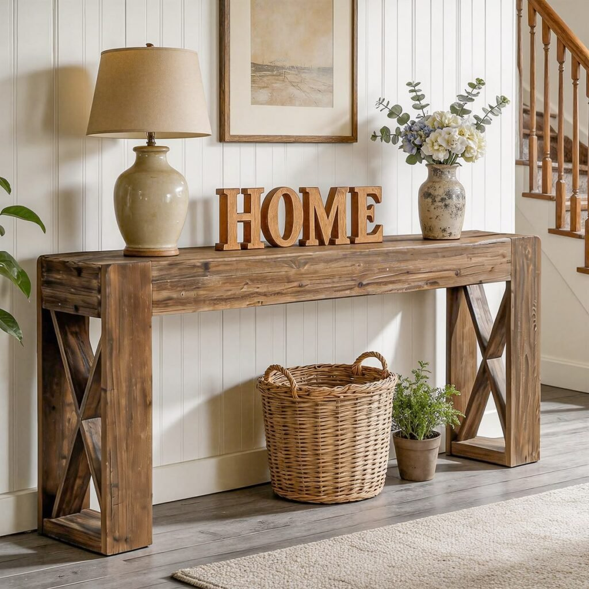
7. Use a Tray for Structure
A tray groups smaller items into one visual unit instead of letting them scatter across the whole surface.
It also protects the table's finish from keys, mail, or anything else that tends to land there daily.
Wood, metal, or woven materials all work, depending on the table's overall style.
This is one of the simplest ways to make a functional catch-all spot still look genuinely styled.
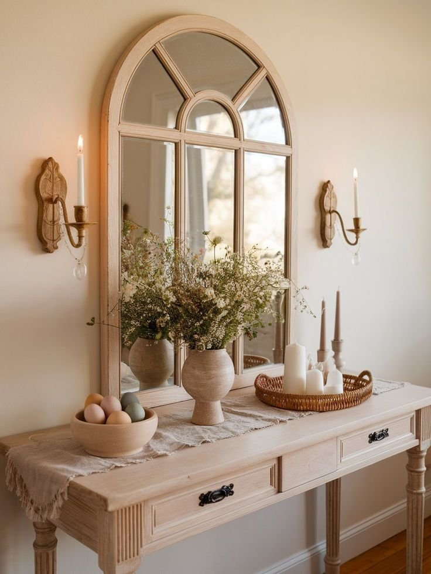
8. Lean a Piece of Artwork
A single framed piece leaned against the wall behind the console adds personality without needing to be mounted anywhere.
It also gives the eye somewhere to land that isn't the mirror or the tabletop itself.
Leaning, rather than hanging, keeps the whole look casual and easy to change later on.
This works especially well paired with a smaller or lower mirror above the table.
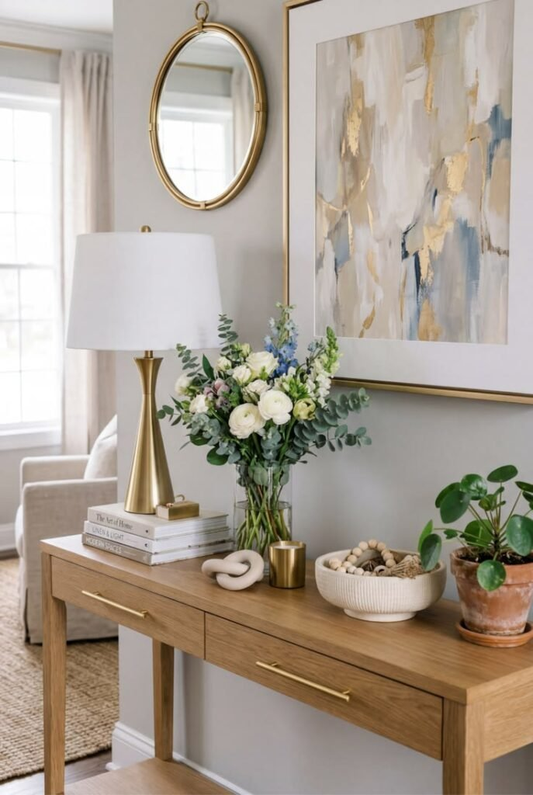
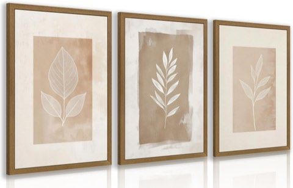
MueyHel Neutral Botanical Flower Wall Art, Set of 3, Wood Framed, 12 x 16
Shop on Amazon9. Bring In a Touch of Greenery
A console table without a single plant or stem on it tends to feel a bit sterile.
Real or faux both work here. What actually matters is scale and placement, not which one it technically is.
A tall stem adds height on one side, while a low, compact plant softens a corner on the other.
Greenery is one of the easiest additions to swap out too, without disturbing anything else already on the table.
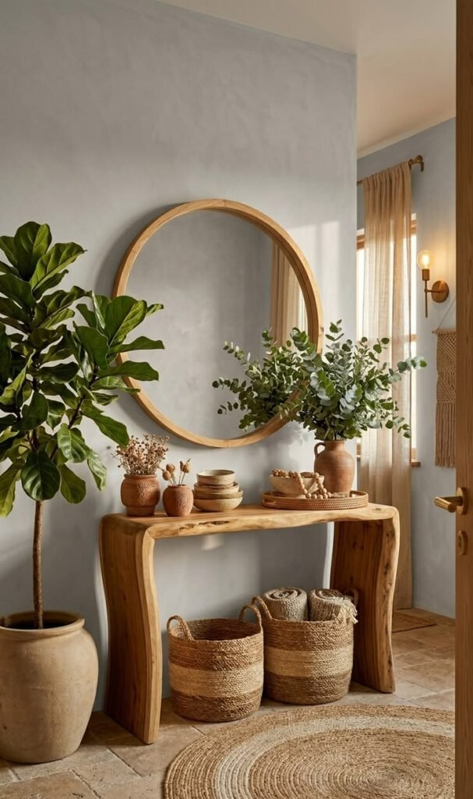
SHACOS Artificial Olive Branches, 28 Inch, 4 Piece
Shop on Amazon10. Add a Small, Curated Book Stack
Books add color, texture, and a bit of personality that most other objects simply can't match.
A stack of two or three, chosen for their spines rather than grabbed at random off a shelf, reads as intentional.
Topping the stack with a small object adds a natural finishing touch to the whole arrangement.
This works whether the books actually get read or are really just there to be looked at.
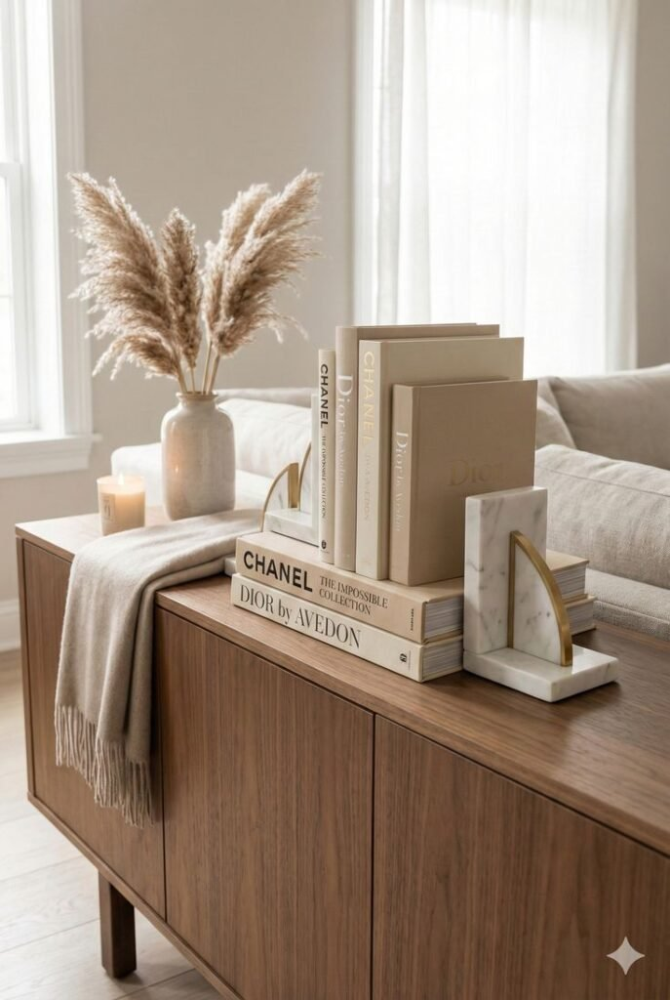
Oversized Decorative Coffee Table Books, Set of 3, Earth Tones
Shop on Amazon11. Add a Lamp for Warmth
Overhead lighting alone tends to leave a console table looking flat, no matter how it's styled.
A table lamp adds warmth at a human height, especially in the evening, when overhead lighting starts feeling a bit harsh.
It also adds genuine height variation without needing another tall decorative object to do the same job.
A lamp earns its spot on nearly every console table, whether it's doing real functional work or purely decorative.
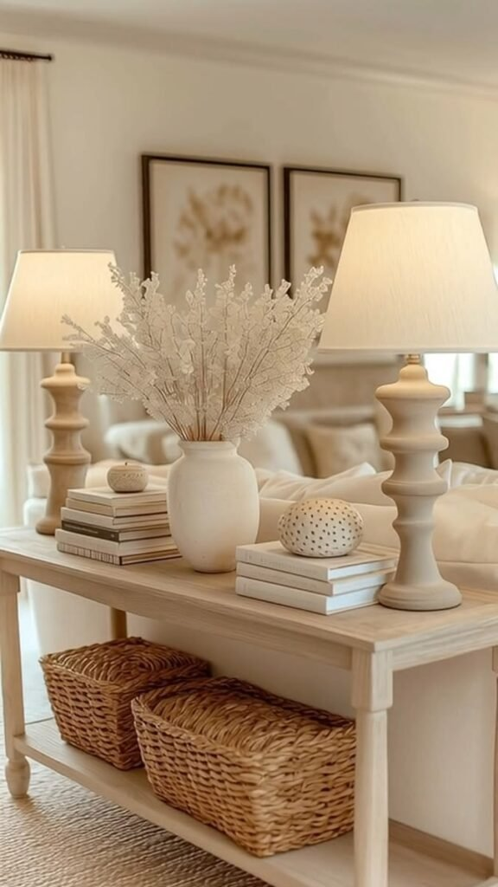
12. Hang a Statement Mirror
A mirror above a console table does double duty. It anchors the wall and bounces light back out into the room.
An oversized or uniquely shaped mirror reads as the clear focal point on its own, which frees up the table below to stay a lot simpler.
This works especially well in a hallway or entry that doesn't get much natural light otherwise.
Once the mirror's in place, everything else on the table becomes supporting detail around it.
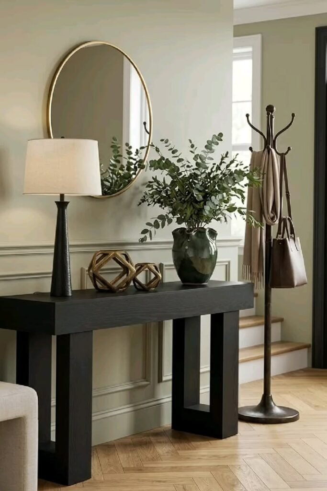
Micasso Vintage Gold Arched Mirror, 36 x 29, Baroque Antique Wall Mirror
Shop on AmazonMaking It Look More Expensive
A higher-end look usually comes down to fewer, better-chosen pieces rather than a bigger budget.
Repeating one or two materials, the same metal finish, the same wood tone, across several objects reads as cohesive and genuinely considered.
Negative space is doing more work here than most people give it credit for. A table that isn't crammed automatically looks more expensive than one that is.
The cheapest upgrade on this entire list is simply taking something off the table, not adding something new to it.
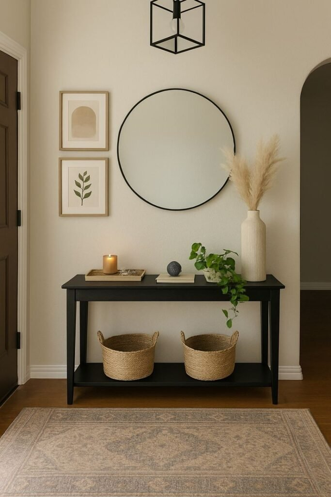
Final Thoughts
None of these twelve ideas really work in isolation from the two rules at the very top.
Scale, restraint, and intentional negative space matter more than which specific objects actually end up on the table.
Start with the rule, then pick two or three ideas from the list that genuinely fit the space in front of you.
A console table that looks put together usually has less sitting on it, not more.